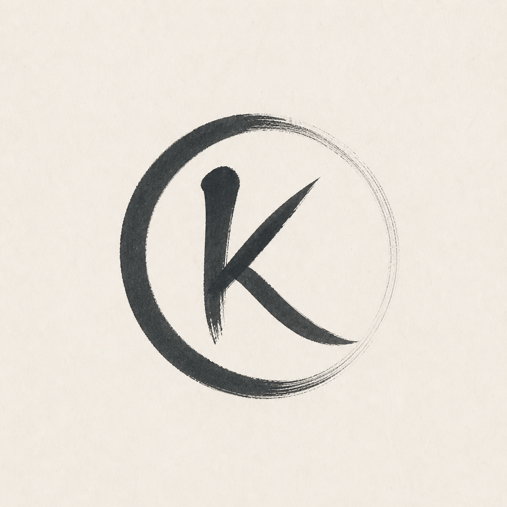
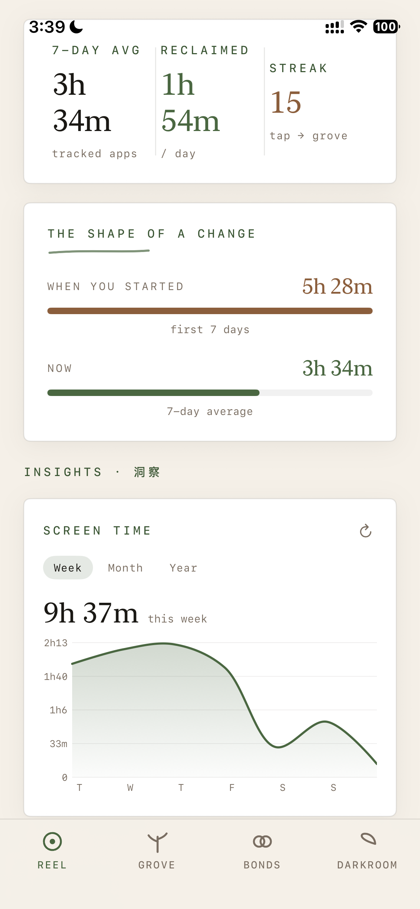

KizzunaA Guided Tour
Tap through the features below. Each one is built around a simple idea — that spending less time on your phone should feel less like punishment and a lot more like getting something back.

Your time, drawn honestly — by day, by hour, by category, measured against your own baseline. Press and hold to sit with any single day. No guilt-trips, no red numbers screaming at you. Just a clear picture of where your hours went, so the changes you make are the ones that actually matter.
Common Questions